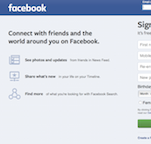

- 3. Pandora
- 4. Facebook
- 5. Moodle
Images of websites

Why I am taking this class and what I hope to achieve through it?
I don't know very much about web design, but I think it's an extremely useful (and marketable) skill to have as a Graphic Designer. I hope to become skilled in web design and learn to use html and css